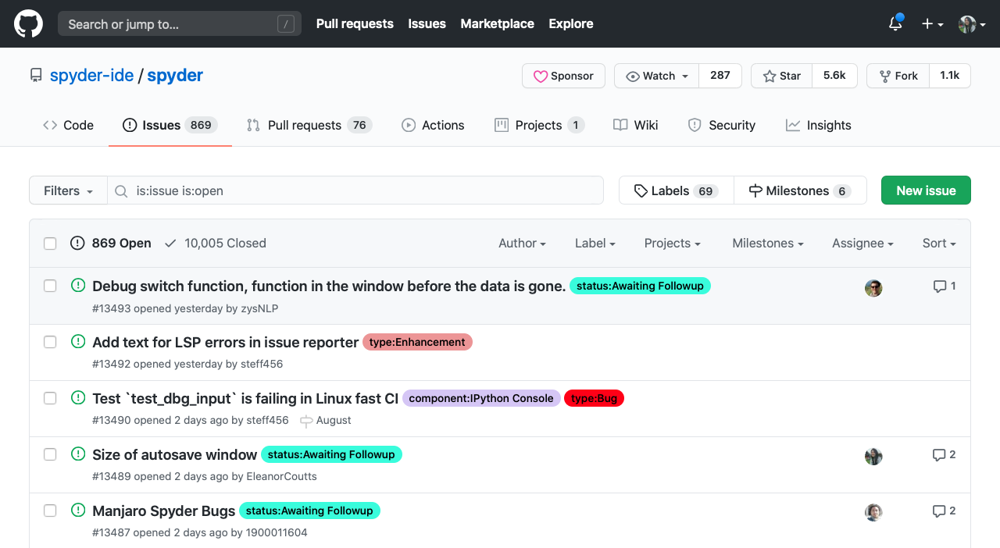
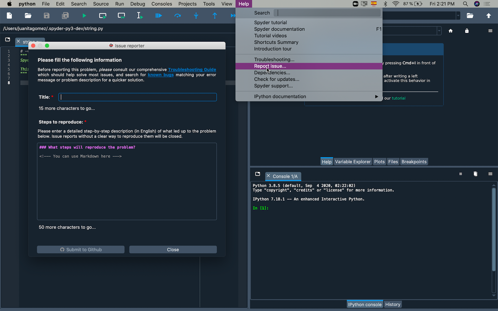
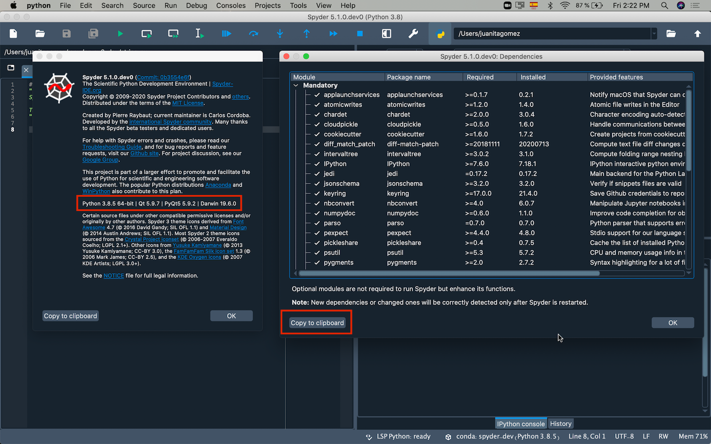

Submit a Report#
If you can’t fix your issue with any of the troubleshooting steps, then you’ll want to submit it to our issue tracker so our team can take a look at it for you. You’ll need a Github account to do this, so make sure you have one before you begin (a good idea anyway).
Important
Before you submit an issue, make sure you’ve searched a description of the problem and a relevant portion of the error traceback, on both Google and Spyder’s issue tracker to make sure it hasn’t been submitted before. If that’s the case, your issue will be closed as a duplicate.
Ways to submit an issue#
There are several ways to submit an issue, either from Spyder or GitHub directly. In order of preference and difficulty:
If Spyder presents an error dialog you can submit an issue directly from it. You will have to fill out a title for your issue, specify the steps that lead to this problem and click submit to Github. This will prefill an error report with your environment details, key versions and dependencies and automatically insert the error/traceback for you.

If Spyder opens and your issue does not involve an error dialog, the best way to do so is to simply select Report issue from the Help menu, which manually brings up the issue report form and fills in the key information about your Spyder installation. Describe the issue you’re experiencing (including any error/traceback information) along with a descriptive title, and click Submit to Github.
If Spyder won’t launch, you can submit a report manually at our issues page on Github. Unlike the above, you’ll need to manually provide the versions of everything (Spyder, Python, OS, Qt/PyQt, Anaconda, and Spyder’s dependencies) as listed in the error report template; see below for more on that.

Once you submit your report, our team will try to get back to you as soon as possible, often within 24 hours or less, to try to help you fix it.
What to include in your report#
Please include as much as possible of the following in your report to maximize your chances of getting relevant help and our ability to diagnose, reproduce and solve your issue.
The key items, in order of priority:
The full, complete error message or traceback copy/pasted or automatically entered exactly as displayed by Spyder:
Auto-generated reports directly from the error dialog should include this automatically, but double check to make sure.
You can copy and paste this from the the Show Details section of the error dialog.
If not present, or a dialog is not displayed, you can also find it printed to Spyder’s Internal Console, located under the View menu at .
If you prefer, or if Spyder won’t start, you can start Spyder from your command line (or Anaconda prompt on windows) with
spyderand copy the output printed there.
Note
If you are reporting a specific behavior rather than an error, or the message does not fully explain what occurs, please describe in detail what actually happened, and what you expected Spyder to do.
A detailed, step by step description of exactly what you did leading up to the error occurring, complete with sample code that triggers it, if applicable.
Information about Spyder and its environment as listed in the error report template, which you can find under About Spyder in the Help menu; along with its key dependencies, shown in the dialog under (there’s a button to copy-paste them).
If Spyder won’t launch, paste the output of
conda listfrom your command line (or Anaconda prompt on Windows) in the Dependencies section of the issue template.
How you installed Spyder and any other relevant packages, e.g. Anaconda, MacPorts or pip and whether Spyder has worked before since you installed it.
What else you’ve tried to fix it, e.g. from this guide or elsewhere on the web, and if you’ve tried to reproduce it in standalone QtConsole, IPython, and/or the plain Python interpreter.
Whether the problem occurred consistently before in similar situations or if this is the first time you’ve observed it.
Anything else special or unusual about your system, environment, packages, or specific usage that might have anything to do with the problem
Tip
If including block(s) of code in your report, be sure to precede and follow it with a line of three backticks ``` to get a code block like this:
print("Your Code Here!")
Otherwise, your code will likely contain random formatting or missing indentation, making it difficult to examine and run it to reproduce and fix your issue.